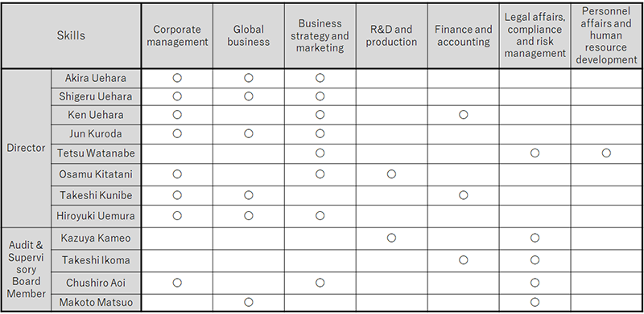

Corporate Governance
Basic Approach
The Taisho Pharmaceutical Group (the “ Group”) aims to establish even stronger management foundations to ensure that it fulfills its corporate mission in accordance with its Management Policy and continues to achieve steady growth and development amid global competition.
Guided by this philosophy, Taisho Pharmaceutical Holdings Co., Ltd. (the “Company”) was established as a pure holding company on October 3, 2011 to manage the Group as a whole. The Company is responsible for formulating Group management strategy and effectively allocating resources to businesses and operations in Japan and overseas with the objective of increasing corporate value by generating sustainable, balanced growth and strengthening competitiveness in the Self-Medication Operation Group and Prescription Pharmaceutical Operation Group, and by achieving synergetic effects between these two businesses.
Accordingly, the Company has established an appropriate Groupwide management framework for properly monitoring and supervising the status of business and operational execution at the Company and Group companies. Specifically, the Group establishes a corporate governance structure and properly implements this structure, with the aim of achieving its overall business objectives and fulfilling its social responsibilities. The basic principle behind these efforts is for the Board of Directors and the Audit & Supervisory Board or its members to work in close collaboration, while properly managing the entire Group by exchanging information with the business management bodies of the Company and Group companies.
Corporate Governance Structure
Corporate Governance Report
Please refer to our corporate governance report regarding the Company’s compliance status on the principles of the Corporate Governance Code.
Corporate Governance Structure
The Company has adopted a corporate governance structure with a Board of Directors and an Audit & Supervisory Board. As of June 29, 2022, the Company has eight directors, two of whom are outside directors, and four Audit & Supervisory Board members, two of whom are outside members.
Skills Matrix
To ensure that a balanced and diversified Board of Directors is created in terms of knowledge, experience and capabilities as a whole, the Company appoints its internal directors and Audit & Supervisory Board members based on whether or not they have sufficient experience, knowledge and expertise that match its corporate philosophy, code of conduct and management strategies. At the same time, the Company selects at least two people as its outside directors and Audit & Supervisory Board members, mainly from among corporate executives and experts by taking into consideration their experience, knowledge and expertise. The following is a skills matrix listing the skills of each of the directors and Audit & Supervisory Board members.

* Up to three distinctive skills that each member has are listed. The matrix does not show all of the skills that each member has.
Board of Directors
The Board of Directors holds meetings, in principle every month and as necessary, with 15 such meetings convened during fiscal 2021. The Board of Directors makes decisions on important matters related to the Company’s business execution and Groupwide management, and monitors operations undertaken based on these decisions. The Management Advisory Committee, whose members include the Company’s representative directors, serves as an advisory body to the Board of Directors. It meets on an as-required basis and deliberates important matters, including matters put forward to the Board of Directors, further facilitating effective and rapid management decision-making. It is configured so as to enable sufficient discussion from diverse standpoints not only of employee attributes such as gender and nationality but also issues that include the Company’s continued development and decision-making on important matters.
Audit & Supervisory Board
The Audit & Supervisory Board meets, in principle, at least once every three months. At these meetings, its members exchange opinions regarding the status of the audits they conduct in accordance with principles and standards for audits that have been established by the Audit & Supervisory Board, and receive reports on the processes and results of audits conducted by the accounting auditor and on internal control system audits. Audit & Supervisory Board members check the status of business execution and asset protection and report as appropriate to the representative directors and the Board of Directors, providing advice as needed.
Other Frameworks
The main divisions of the Company as well as each of the Group companies appropriately communicate management-related information by conducting information meetings with Audit & Supervisory Board members, regarding the status of execution and issues related to the business activities of each company.
The Company has set up various committees comprised primarily of directors in charge of respective businesses and managers from related departments and divisions to address a variety of across-the-board business management issues faced by the Company and Group companies. These committees include the Risk Management Committee, the Compliance Advisory Committee and the Internal Control Assessment Committee. The Company implements Groupwide monitoring of various issues in each field, and has a reporting system in place to ensure that appropriate information is communicated to business managers at the Company and various Group companies.
Outside Directors and Outside Audit & Supervisory Board Members
There are two outside directors and two outside Audit & Supervisory Board members, and there are no personal or capital relationships between the Company and any of the outside directors and outside Audit & Supervisory Board members. The outside directors and outside Audit & Supervisory Board members have been appointed based on their broad experience and specialist knowledge in management, and advanced insight into social responsibility. They are responsible for supervising and auditing the appropriateness of duties from an independent standpoint without direct involvement in the execution of duties.
Outside directors and outside Audit & Supervisory Board members obtain information regarding such matters as compliance, risk management, internal audits, financial reports and evaluation of internal control relating to financial reports from each division in charge of internal control, as well as the results of audits by Audit & Supervisory Board members and the accounting auditor. The information is obtained through the Board of Directors and the Audit & Supervisory Board and is used in various ways to ensure the appropriateness of duties.
Compensation of Directors and Audit & Supervisory Board Members
- Matters pertaining to the policy on determining the content of remuneration, etc. for individual Directors The Company has set a policy for determining the content of remuneration, etc. for individual Directors (the "Determination Policy") and determines the ranges of the levels of Directors' remuneration and other rewards depending on individual ranks based on those of consumer goods manufacturers, pharmaceutical manufacturers, and other companies of similar size in such a way as to ensure that the total remuneration will not exceed the limit adopted in advance by the General Meeting of Shareholders. In addition, when determining remuneration for individual Directors, the basic policy is to set the remuneration at an appropriate level in light of their duties. Specifically, remuneration, etc. for Directors consists of fixed remuneration as basic compensation, a bonus as performance-based compensation and stock compensation-type stock options (share acquisition rights) as non-monetary compensation. However, in light of their duties, Outside Directors receive only the basic compensation. The ratio of remuneration for Directors by type is initially set so that the expected ratio of the basic compensation and the performance-based compensation will be roughly 12:1. Subsequently, the amount of performance-based compensation is adjusted within a certain range based on the business performance of the Company. The details of the performance indicators selected as the basis for calculating the amount of 13 performance-based compensation, etc. are based on the degree of achievement of the Group's consolidated sales compared with the target, among other factors. The purpose of selecting the performance indicators is to increase the Directors' awareness of the improvement of business performance in each fiscal year. The Group's consolidated sales in the fiscal year under review were 268,203 million yen compared with the forecast of 269,000 million yen. In addition, non-monetary compensation is paid in lieu of retirement benefits within the range determined at the 1st Ordinary Meeting of Shareholders held on June 28, 2012 with the aim of medium- to long-term incentives, and its ratio to other compensation is not set in advance in view of its nature. Moreover, the Determination Policy is set by the resolution of the Board of Directors.
- Matters pertaining to the resolution of the Ordinary Meeting of Shareholders on remuneration, etc. for Directors and Audit & Supervisory Board Members The amount of monetary compensation for Directors was resolved at the 1st Ordinary General Meeting of Shareholders held on June 28, 2012 to be within 360 million yen per year (including 36 million yen per year for Outside Directors) (not including salaries Directors receive for their concurrently serving as employees of the Company). The number of Directors as of the conclusion of the 1st Ordinary General Meeting of Shareholders is 11 (including two Outside Directors). In addition, separate from the monetary compensation, the amount of stock options (share acquisition rights) was resolved at the 1st Ordinary General Meeting of Shareholders held on June 28, 2012 to be within 70 million yen per year (Outside Directors are not subject to stock options). The number of Directors as of the conclusion of the 1st Ordinary General Meeting of Shareholders (excluding Outside Directors) is 9. The amount of monetary compensation for Audit & Supervisory Board Members was resolved at the 1st Ordinary General Meeting of Shareholders held on June 28, 2012 to be within 60 million yen per year. The number of Audit & Supervisory Board Members as of the conclusion of the 1st Ordinary General Meeting of Shareholders is 4.
- Matters pertaining to the delegation of determination of the content of remuneration, etc. for individual Directors In the Company, Chief Executive Officer Akira Uehara determines the specific content of remuneration for individual Directors based on a resolution of the Board of Directors. With respect to the basic compensation and the performance-based compensation, the extent of his authority is to determine the ranges of remuneration levels for individual ranks and the specific amount of remuneration for individual Directors according to the Determination Policy. The reason for delegating this authority is that most Directors are executive directors, and in order to evaluate the performance of executive directors and determine the content of their remuneration while maintaining oversight of the Company's overall performance, it is more appropriate for the Chief Executive Officer, who oversees the execution of business operations, to make decisions rather than for the Board of Directors to deliberate and make decisions after consultation. To ensure that such authority is properly exercised by the Chief Executive Officer, the Board of Directors takes measures such as listening to the opinions of Outside Directors and taking them into consideration. Given that the amount of remuneration for individual Directors is determined through such procedures, the Board of Directors has judged that the content is in line with the Determination Policy.
Compensation of Directors and Audit & Supervisory Board Members
| Category | Total amount of compensation (millions of yen) | Total amount by type of compensation (millions of yen) | Number of eligible directors/Audit & Supervisory Board members | ||
|---|---|---|---|---|---|
| Basic compensation | Performance-based compensation, etc. | Non-monetary compensation, etc. | |||
| Directors (excluding outside directors) | 231 | 204 | 5 | 21 | 8 |
| Audit & Supervisory Board members (excluding outside members) | 25 | 25 | — | — | 3 |
| Outside directors and outside Audit & Supervisory Board members | 48 | 48 | — | — | 4 |
Notes
- Director compensation does not include compensation directors receive for concurrently serving as employees of the Company.
- The table above includes an outside director who retired during the fiscal year under review.
Internal Audits and Audits by Audit & Supervisory Board Members
The Audit Division is an organization exclusively for auditing and is independent of the Company’s lines of business execution. Consisting of nine staff members as of June 29, 2022, this division formulates annual audit plans according to the significance of various risks, based on which it performs internal audits in accordance with the Company’s internal auditing regulations. In addition, it maintains close contact with the audit organizations of Group companies, with a view to overseeing and managing the implementation of internal audits by Group companies. Regarding internal control audits, the Audit Division and the accounting auditor cooperate to enable the appropriate and efficient execution of mutual audit operations by sharing information concerning audit plans, procedures and verification results.
The Audit & Supervisory Board is composed of two full-time members and two outside members. In addition, the Audit & Supervisory Board Members’ Office has a specialized staff to enhance the effectiveness of audits by Audit & Supervisory Board members.
Audit & Supervisory Board Members conduct comprehensive audits of all Director duties in line with audit policies formulated in accordance with audit standards set by the Audit & Supervisory Board. Full-time Audit & Supervisory Board Members attend meetings of the Board of Directors and other important meetings, and routinely audit the decision making of the Board of Directors and Directors and the status of execution of Directors’ duties primarily through field audits of divisions within the Company and offices of Group companies. Full-time Audit & Supervisory Board Members establish regulations for communicating and reporting to Audit & Supervisory Board Members and the Audit & Supervisory Board. They set rules that they must report directly to Audit & Supervisory Board Members if they have obtained information or learn that job duties are not performed appropriately by any of the Directors and employees of the Company and its subsidiaries, who has violated a law, regulation, the Articles of Incorporation, or an important internal rule or caused a compliance problem or related issue, and they must not cause any disadvantage to a whistleblower for making a report while gathering important information on risks.
The Audit & Supervisory Board receives reports on the status of execution of Directors’ duties and the progress and results of audits on accounting and internal control with a focus on legality, risk management and internal control as areas of examination, and reports to the Representative Directors and other Directors on the status and results of audits implemented by the Audit & Supervisory Board Members.
The Audit & Supervisory Board members, the Audit Division and the accounting auditor communicate with each other to support the execution of efficient and effective audits.
Accounting Auditor
The Company has concluded an audit contract with and undergoes audits by Ernst & Young ShinNihon LLC in accordance with the Financial Instruments and Exchange Act and the Companies Law.